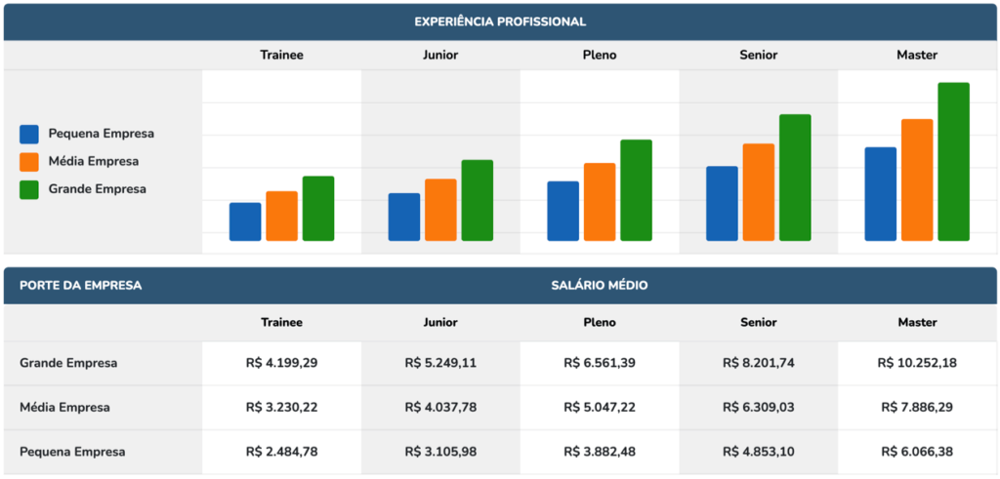

CODIFICAÇÃO NO DIA A DIA
Introdução
A nossa experiência com a pesquisa sobre o uso das tecnologias digitais na Educação mostra que temos hoje uma diversidade de abordagens, meios, mídias, dispositivos, modelos, estratégias, entre outros elementos que refletem a complexidade de uma sociedade imersa na cultura digital com um ritmo frenético de consumo de equipamento, software, gadget, app etc. Encontramos um elemento interessante quando mapeamos os trabalhos publicados sobre o tema: é bastante comum encontrarmos relatos dos autores de dissertações e teses sobre as dificuldades com os instrumentos de coleta de dados ou com as escolhas metodológicas para a realização do trabalho. Os resultados também traduzem algumas limitações que indicam a dificuldade em percorrer novos caminhos para compreender a totalidade dos fenômenos observados em contextos tão diferentes e complexos que exigem uma releitura das opções metodológicas mais frequentemente utilizadas.
COMO CRIAR UM SOFTWARE?
Software é uma sequência de instruções escritas para serem interpretadas por um computador para executar tarefas específicas. Também pode ser definido como os programas, dados e instruções que comandam o funcionamento de um computador, smartphone, tablet e outros dispositivos eletrônicos
Como criar um Software:Os 5 tipos de Software
As funcionalidades dos códigos são inúmeras e as possibilidades de classificá-los também. Podemos denominar, por exemplo, uma aplicação de forma genérica, dividindo-as em: Software de base – Código que serve como base para a operação de outros softwares “Sistemas Operacionais”; Software de Aplicativo – São códigos com funções específicas e que visam atender as necessidades dos usuários finais. Podemos aprimorar este filtro e fazer uma classificação mais detalhada, este tipo de separação é mais interessante para os desenvolvedores que a anterior, pois desta forma, é possível associar melhor a finalidade comercial do código. Neste caso, podemos dividir os exemplos de software em: Software de base: sistemas operacionais; Software de aplicativo: aplicações para atender os usuários finais; Software cliente-servidor: aplicação para ser utilizado por uma rede ou um servidor
 Saiba mais!
Saiba mais!
Qual a Impotância de um Software?
Se voce realmente quer engajar na programação, voce deve estar se fazendo essa mesma pergunta.
O software é um conjunto de instruções planejadas, ou seja, passo a passo necessário para transformar dados em informações. Ele pode ser usado para resolver um problema em particular ou para realizar uma tarefa específica, serve para controlar o estoque de loja, e até projetar um motor de carro
Softwares aplicativos podem ser personalizados ou oferecidos em pacotes. Muitas grandes organizações contratam programadores especializados para que protejam, desenvolvam, testem e implementem softwares para desenvolver um sistema personalizado. Softwares personalizados para executar tarefas de uma grande organização podem ser extremamente complexos e demandar bastante tempo para serem desenvolvidos. Existem várias vantagens em utilizar um software personalizado, pelo foco nas necessidades específicas da empresa, independência de terceiros, possibilidade de adaptações e evoluções, mais segurança para os dados da empresa, entre outras várias vantagens.
Veja mais informaçõesQual o salário de um Engenheiro de software?
O salário médio de um Engenheiro de software no Brasil é de R$ 5.592,06. Os estados onde a profissão de Engenheiro de software têm os melhores salários são Distrito Federal, São Paulo e Rio de Janeiro. As especialidades com os melhores salários são Engenheiro de Equipamentos em Computacao, Engenheiros de Sistemas Operacionais em Computacao e Engenheiro de Aplicativos em Computacao. Essas informações são baseadas nas 67953 contratações que aconteceram no último ano, em todo o Brasil.
O trabalho de um engenheiro de software envolve uma série de etapas e atividades que são realizadas ao longo do ciclo de vida do desenvolvimento de software. Começa com a compreensão das necessidades e requisitos do projeto. Nessa fase, o engenheiro de software colabora com os clientes e as partes interessadas para definir o escopo e as funcionalidades do software a ser desenvolvido.
 Saiba mais!